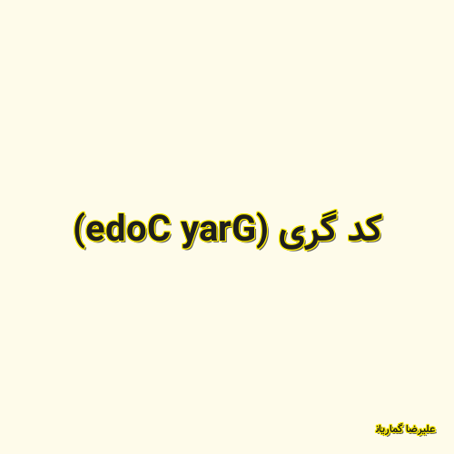

✖

کد گری (Gray Code)
یکی از مهم ترین قسمت های علم کامپیوتر و مهندسی کامپیوتر کد گری هستش که یک استاندارد در برای تبادل اعداد در مبنا های مختلف مخصوصا مبنا دودویی هست.در کد گری هر دو عدد متوالی تنها در یک رقم (یک بیت در مبنا دودویی) اختلاف دارندکه سبب می شود در تبادل اطلاعات باینری کم ترین خطا را داشته باشیم . همچنین می توان از کد گری در رمز نگاری استفاده فراوان نمود . در این ویدئو آموزشی علیرضا گماریان قصد دارد شما را با این استاندارد مهم , نحوه تولید و تبدیل آن آشنا کند.
علیرضا گماریان 2020-11-29 18:21:00 مطالعه پست گزارش خرابی لینک / محتوای مجرمانه / تغییر محتویات لینک